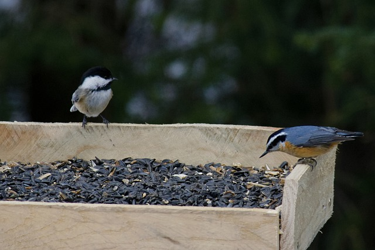
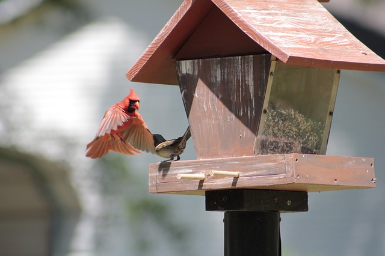
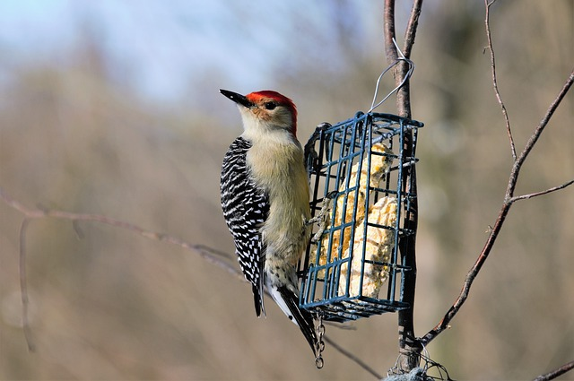
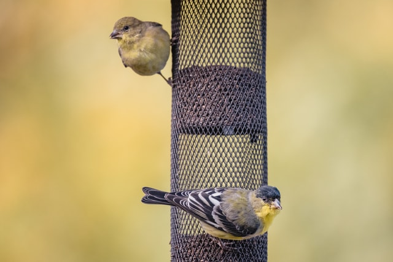

Types of Feeders
To attract the greatest variety of birds to your yard, provide several different feeder types offering a variety of foods.
You’ll find that some species are more likely to use one kind of feeder over another. Here’s a rundown of the main types:
- Tray Or Platform Feeders
- Trays attract the widest variety of seed-eating feeder birds, including pigeons, starlings, and House Sparrows, but also grosbeaks and native sparrows. Tray feeders offer no protection against rain and snow; without excellent drainage, seeds may become wet enough to sprout, and wet seeds may also foster fungal and bacterial growth. Bird droppings can quickly soil the seed in tray feeders. The best tray feeders have a screened, rather than solid, bottom to promote complete drainage; at the very least, tray feeders should have several drainage holes. Even with drainage, the bottom should be removable for fairly frequent hosing. Offer only enough seed in tray feeders for birds to finish every day or two, and shake out the bottom every time you add new seeds.
- Tray feeders placed near the ground are most likely to attract ground-feeding birds such as juncos, doves, jays, blackbirds, and sparrows. Tray feeders can also be mounted on deck railings, posts, or stumps, or can be suspended. Some models have a roof to provide some protection from the weather.

- Hopper Bird Feeder
- The classic hopper feeder is usually covered with a roof and enclosed on all four sides. It’s common to find these types of bird feeders in the shape of a house or a barn. This kind of feeder protects seeds fairly well against the weather and bird droppings, but if the seed within the hopper does get wet, bacteria and fungus can thrive.
- Many hoppers can hold enough seed to last for several days, which can make them very convenient for people, but dangerous for birds if the seed within is allowed to get wet. Most hopper feeders are much harder to clean than tray feeders. Hopper feeders are attractive to most feeder birds, including finches, jays, cardinals, buntings, grosbeaks, sparrows, chickadees, and titmice.

- Suet Feeders
- Suet feeders may be constructed of wire mesh or plastic-coated wire mesh, or be a simply mesh onion bag. They can be nailed or tied to a tree trunk, suspended, or affixed to the side of a hopper feeder. Suet can melt or go rancid at higher temperatures. So in many places this is a food offered only during winter.
- Suet feeders attract a variety of woodpeckers, nuthatches, chickadees, titmice, jays, and starlings. Suet cages that open only at the bottom force birds to hang upside down while feeding. This design usually excludes starlings, which have trouble perching that way.
- Some people are concerned about metal suet feeders, afraid bird tongues or eyes can stick to the metal. Although anecdotal information about this actually happening is scarce or nonexistent, it’s easy to find plastic-coated suet cages.

- Tube Feeders
- Tube feeders are designed to limit the kinds of birds eating at your feeder. They also eliminate many of the non-bird feeder raiders. Depending on the size of the perches under the feeding ports, you may attract small birds such as sparrows, grosbeaks, chickadees, titmice, and finches while excluding larger species such as grackles and jays. Styles with perches above the feeding ports are designed for seed-eating birds that can feed hanging upside down, such as goldfinches and chickadees, while dissuading others. Depending on the size of the feeding ports, you can offer tiny nyjer seeds or larger seeds.
- Unfortunately, the seed-containing tube on most tube feeders extends an inch or more below the bottom-most feeding ports. Seed that collects here may become a breeding ground for mold and bacteria. It’s best to block the bottom of the tube below the bottom feeding ports. Some tube feeders are huge, accommodating a dozen or more birds at a time. But these are best used only during times when many birds are using them.
